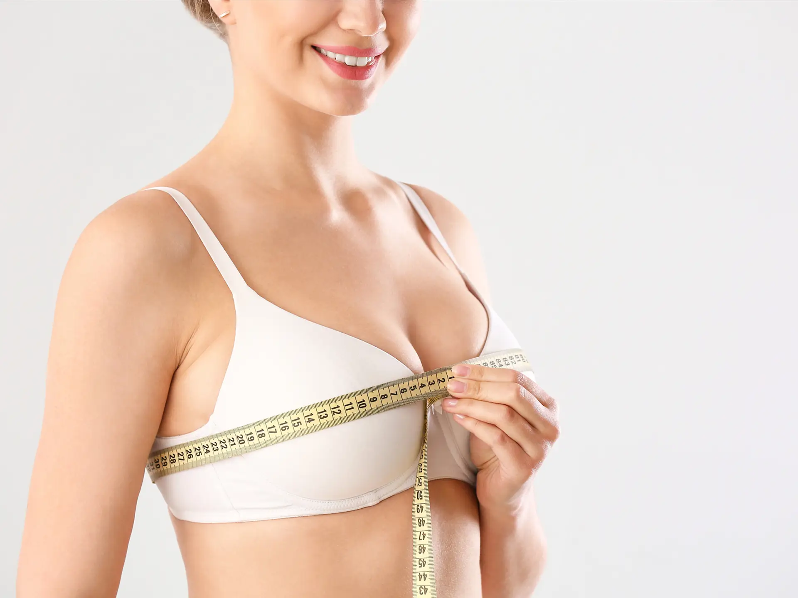
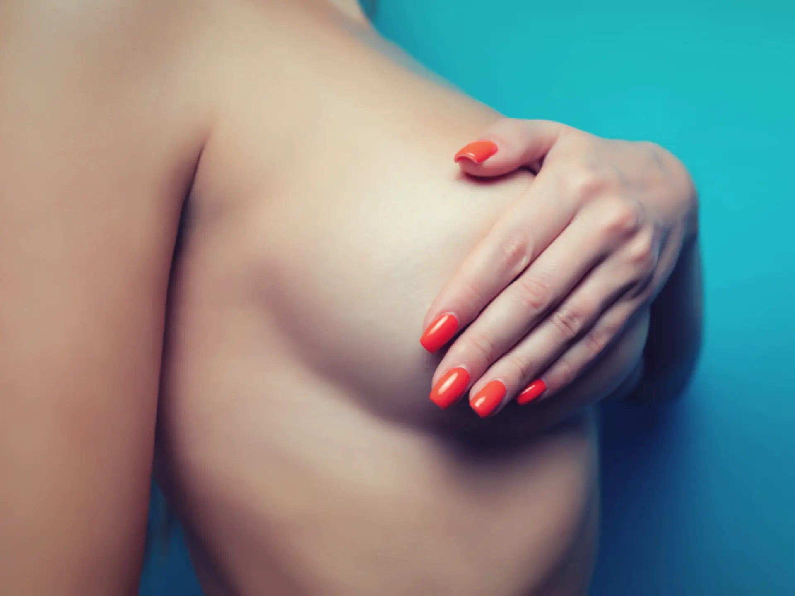
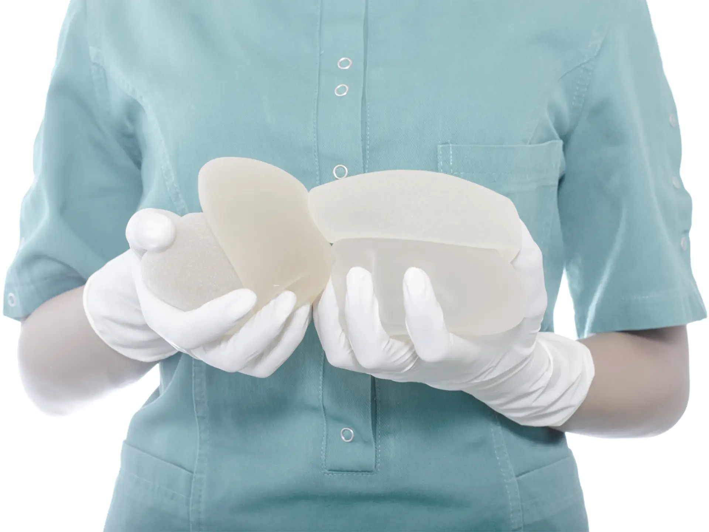
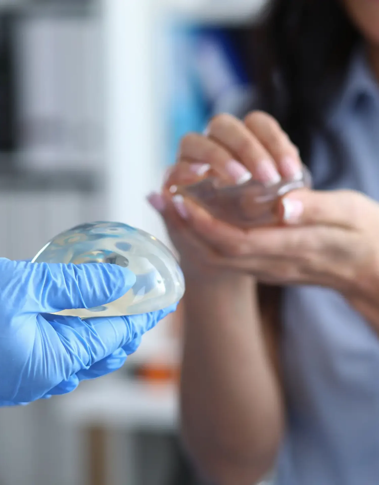
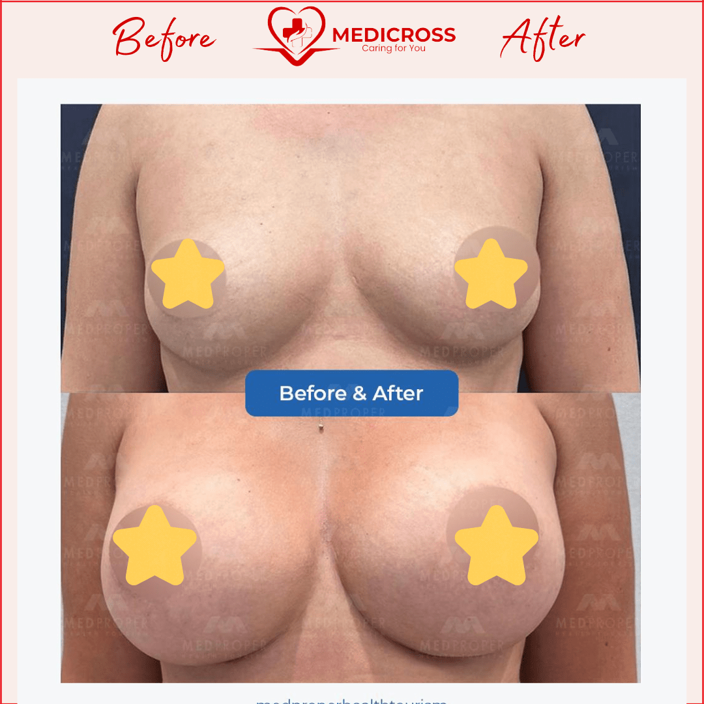
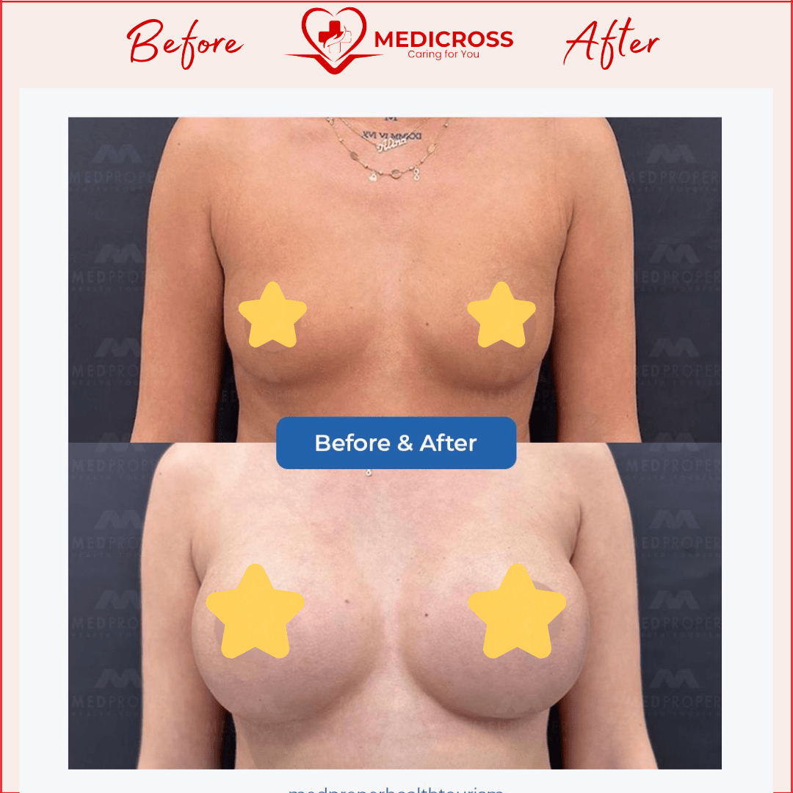
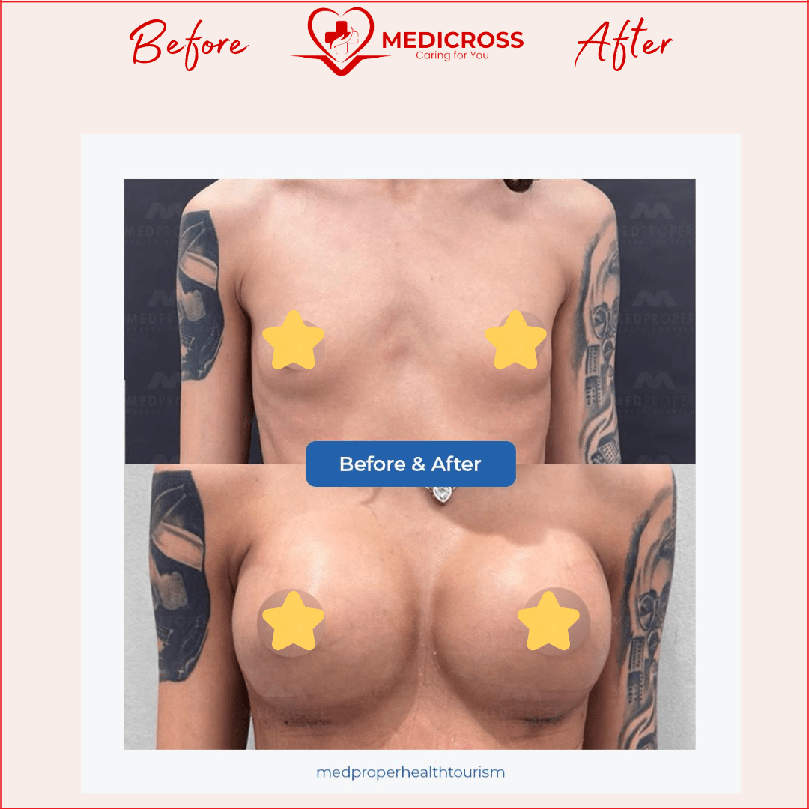
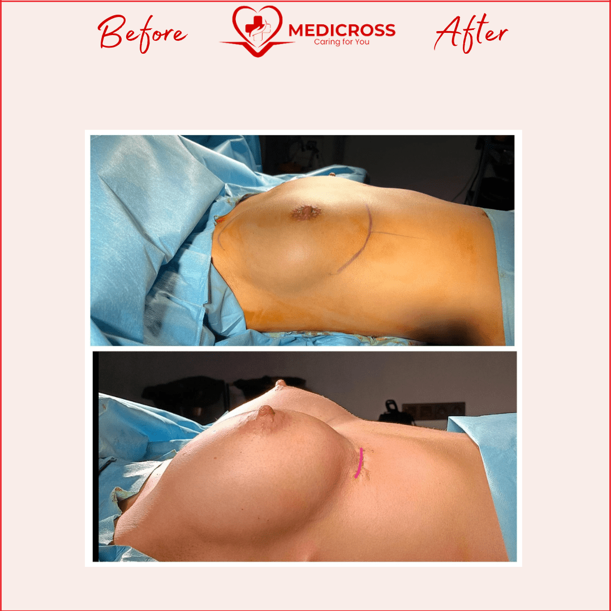
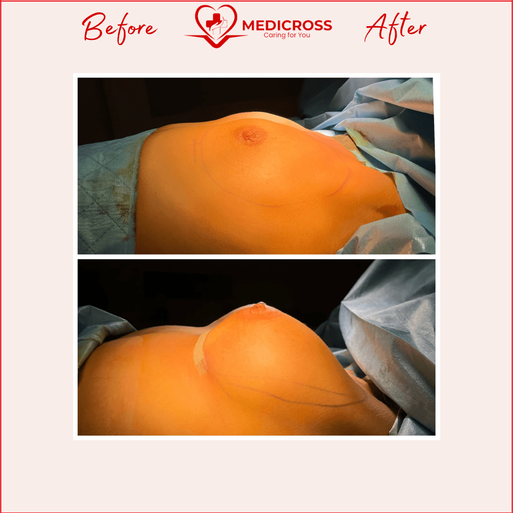

Ce este implantul mamar sau augmentarea sânilor?
Implantul mamar sau augmentarea mamară se referă la operația de mărire a sânilor cu implanturi de silicon. Pacientele care apelează la această intervenție sunt cele care doresc un bust mai mare și vor să se simtă mai bine în pielea lor.
De asemenea, femeile care au suferit o mastectomie (extirparea întreagă sau parțială a sânului afectat de cancer de sân) apelează la această metodă de reconstrucție mamară.

Cazurile când se alege implantul mamar
Pentru implant mamar pot apela toate femeile, chiar începând cu vârsta de 22 de ani (vârsta recomandată de FDA). Poți opta pentru operația de mărire a sânilor dacă te afli într-una din următoarele situații:
Sâni asimetrici
Toate femeile au sânii asimetrici, însă câteodată diferențele dintre ei pot fi destul de mari. Această imperfecțiune poate fi corectată cu ajutorul implanturilor mamare.
Sâni hipotrofici
Nu este o problemă medicală, însă sânii prea mici pot provoca anumite frustrări și o stimă de sine scăzută pentru anumite femei.
Mastectomie mamară
Femeile care au suferit de cancer de sân și au trecut printr-o mastectomie au nevoie de implant mamar pentru reconstrucție mamară și pentru a-și recăpăta încrederea în sine.
Malformații congenitale
Operația de mărire a sânilor nu reprezintă mereu un simplu moft, ci și o intervenție pentru corectarea anumitor imperfecțiuni.
Condiții obligatorii pentru operația de implant mamar
- Creșterea sânilor trebuie să fie completă.
- Pacienta trebuie să fie matură emoțional și să înțeleagă perfect motivațiile pentru care dorește această operație.
- Așteptările trebuie să fie realiste — operația aduce îmbunătățiri, dar nu perfecțiunea.
- Analizele medicale trebuie să arate o stare de sănătate compatibilă cu operația.

Alege implantul cu silicon Mentor
Mentor este liderul mondial în implanturi mamare, iar medicii din Turcia, partenerii noștri, folosesc cu succes produsele Johnson & Johnson (deținătorul brandului Mentor). Pacientele noastre aleg împreună cu medicul implantul Mentor potrivit, în funcție de dorințele fiecăreia și de proporțiile corpului (greutate, înălțime, lățimea toracelui, dimensiunea sânilor și tipul de țesut mamar).

Silicoane anatomice sau rotunde?
Silicoane anatomice
Implanturile anatomice conferă un aspect natural datorită formei de „lacrimă” sau picătură. Această formă imită perfect sânul natural — umplut și rotund în partea de jos, ușor subțiat în partea de sus. Sunt alese de pacientele care își doresc un aspect cât mai natural, au țesut mamar subțire sau doresc să reducă riscul de contractură capsulară (sub 3%).
Silicoane rotunde
Implanturile rotunde conferă un aspect „senzual” sânilor datorită formei bombate, cu un efect vizual pronunțat de tip push-up. Implanturile de ultimă generație (Mentor) au perfecționat materialele, astfel încât riscul contracturii capsulare a devenit aproape inexistent.
Cum se efectuează operația de proteză mamară?
Chirurgia protezei mamare este o operație care durează între 1-3 ore, cu anestezie generală. Pacienta nu simte nicio durere. Înainte de operație se planifică împreună cu pacienta unde vor fi amplasate protezele. Se face o incizie de 4-5 cm prin care se introduce siliconul — cicatricile devin neclare după operație și se vindecă în maximum un an.
În timpul operației, canalele de lapte nu sunt atinse și țesutul nervos nu este deteriorat. Proteza este plasată peste sau sub mușchiul pe care se sprijină sânul, în funcție de decizia luată împreună cu chirurgul.
Despre tipurile de incizii
Incizia inframamară
Incizia sub sân este cea mai des folosită metodă de introducere a implanturilor. Avantaje: cicatrice ascunsă sub pliu, risc scăzut de infecție, ușurință și siguranță în introducerea sau înlocuirea implanturilor.
Incizia periareolară
A doua modalitate ca frecvență — incizia la baza areolei. Avantaje: simplitatea introducerii și mascarea cicatricei datorită culorii mamelonului. De evitat pentru pacientele care vor să alăpteze în viitor.
Incizia transaxilară (subraț)
O alternativă rar întâlnită în operațiile de implant mamar, evitată de majoritatea chirurgilor din cauza dificultăților ce pot apărea în timpul operației.
Bine de știut înainte și după operație
- Consult preoperator: discută cu chirurgul despre așteptările și obiectivele tale.
- Evită medicamentele care cresc riscul de sângerare (anticoagulante).
- Renunță la fumat cu cel puțin 2 săptămâni înainte de operație.
- Nu mânca și nu bea nimic cu 12 ore înainte de intervenție.
- După operație vei purta o bustieră specială de compresie pentru a sprijini sânii în timpul vindecării.
- Majoritatea pacientelor revin la activitățile ușoare în câteva zile; activitățile fizice intense se evită câteva săptămâni.

Rezultate — înainte și după





De ce să alegi Tratamente Turcia by Medicross
- Abordare personalizată, adaptată la nevoi diferite și unice pentru fiecare pacient.
- Suntem asociați cu spitale din Turcia, Istanbul, cu experiență îndelungată.
- Intervențiile medicale sunt realizate în centre dedicate.
- Împreună cu partenerii noștri am creat un întreg program dedicat pacienților.
- Asigurăm translator, fiind conștienți că pacienții noștri au nevoie de comunicare permanentă.
- Echipa medicală va fi în contact cu tine oricând ai nevoie, atât înainte, cât și după operație, pe termen lung.